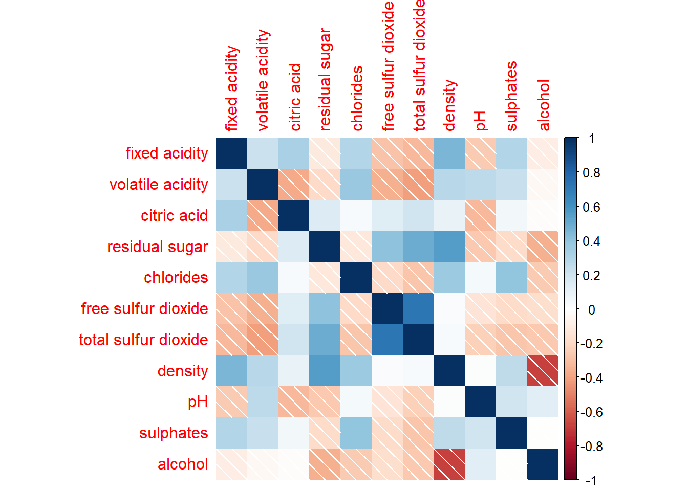
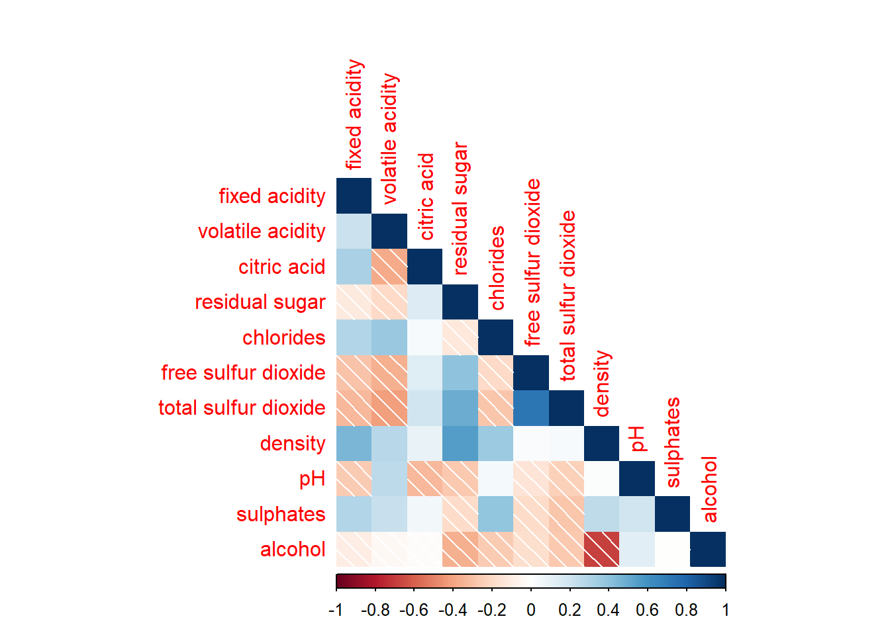
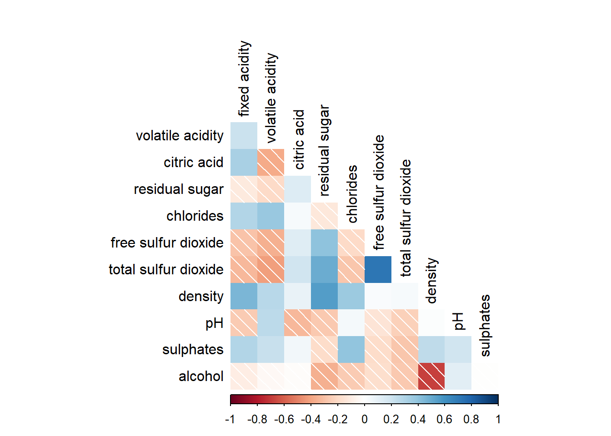

pacman::p_load(corrplot, ggstatsplot, tidyverse)
wine <- read_csv("data/wine_quality.csv")In-class Ex5b: Correlation Matrix
Correlation Matrix
Installing and launching R packages, and loading data
Building a basic correlation matrix using pairs() function
pairs(wine[,1:11])
To show the lower half or upper half of the correlation matrix
pairs(wine[,2:12], upper.panel = NULL)
pairs(wine[,2:12], lower.panel = NULL)
To include correlation coefficient of each pair of variables instead of a scatter plot using panel.cor() function. This will also show higher values in larger font.
panel.cor <- function(x, y, digits=2, prefix="", cex.cor, ...) {
usr <- par("usr")
on.exit(par(usr))
par(usr = c(0, 1, 0, 1))
r <- abs(cor(x, y, use="complete.obs"))
txt <- format(c(r, 0.123456789), digits=digits)[1]
txt <- paste(prefix, txt, sep="")
if(missing(cex.cor)) cex.cor <- 0.8/strwidth(txt)
text(0.5, 0.5, txt, cex = cex.cor * (1 + r) / 2)
}
pairs(wine[,2:12],
upper.panel = panel.cor)
Building correlation matrix using ggcormat() from ggstatsplot package which has better visuals. However there is some conflict with ggtern package.
ggstatsplot::ggcorrmat(data = wine,
cor.vars = 1:11)
ggstatsplot::ggcorrmat(
data = wine,
cor.vars = 1:11,
ggcorrplot.args = list(outline.color = "black",
hc.order = TRUE,
tl.cex = 10),
title = "Correlogram for wine dataset",
subtitle = "Four pairs are no significant at p < 0.05"
)
Building multiple plots with facets using grouped_ggcorrmat() function from ggstatsplot package
grouped_ggcorrmat(
data = wine,
cor.vars = 1:11,
grouping.var = type,
type = "robust",
p.adjust.method = "holm",
plotgrid.args = list(ncol = 2),
ggcorrplot.args = list(outline.color = "black",
hc.order = TRUE,
tl.cex = 10),
annotation.args = list(
tag_levels = "a",
title = "Correlogram for wine dataset",
subtitle = "The measures are: alcohol, sulphates, fixed acidity, citric acid, chlorides, residual sugar, density, free sulfur dioxide and volatile acidity",
caption = "Dataset: UCI Machine Learning Repository"
)
)
Building corrgram using corrplot(), we need to first compute the correlation matrix of the wine data frame before plotting the corrgram
wine.cor <- cor(wine[, 1:11])
corrplot(wine.cor)
There are seven visual geometrics (parameter method) - circle, square, ellipse, number, shade, color and pie - that can be used to encode the attribute values. The default circle can be changed by using the method argument.
corrplot(wine.cor,
method = "shade") 
Corrplot() supports 3 layout types - full, upper, or lower which can be changed using the type argument
corrplot(wine.cor,
method = "shade",
type="lower")
Further customization can be done using diag and tl.col arguments to turn off the diagonal cells and to change the axis text colour.
corrplot(wine.cor,
method = "shade",
type="lower",
diag = FALSE,
tl.col = "black")
It is possible to design corrgram with mixed visual matrix using corrplot.mixed() and also using tl.pos to specify the placement of the axis label.
corrplot.mixed(wine.cor,
lower = "ellipse",
upper = "number",
tl.pos = "lt",
diag = "l",
tl.col = "black")
In statistical analysis, we are also interested to know which pair of variables their correlation coefficients are statistically significant. We can use the cor.mtest() to compute the p-values and confidence interval for each pair of variables, followed by using p.mat argument of corrplot().
wine.sig = cor.mtest(wine.cor, conf.level= .95)
corrplot(wine.cor,
method = "number",
type = "lower",
diag = FALSE,
tl.col = "black",
tl.srt = 45,
p.mat = wine.sig$p,
sig.level = .05)
Corrplot package supports 4 sorting methods with more methods found in the seriation package:
"AOE" is for the angular order of the eigenvectors. See Michael Friendly (2002) for details.
"FPC" for the first principal component order.
"hclust" for hierarchical clustering order, and "hclust.method" for the agglomeration method to be used. "hclust.method" should be one of "ward", "single", "complete", "average", "mcquitty", "median" or "centroid".
"alphabet" for alphabetical order.
corrplot.mixed(wine.cor,
lower = "ellipse",
upper = "number",
tl.pos = "lt",
diag = "l",
order="AOE",
tl.col = "black")
corrplot(wine.cor,
method = "ellipse",
tl.pos = "lt",
tl.col = "black",
order="hclust",
hclust.method = "ward.D",
addrect = 3)